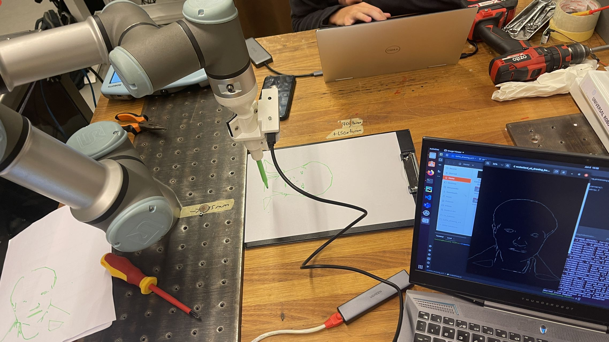
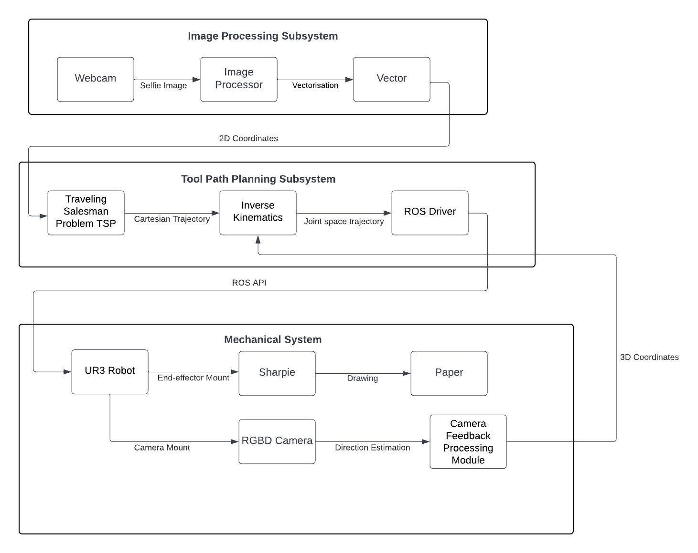
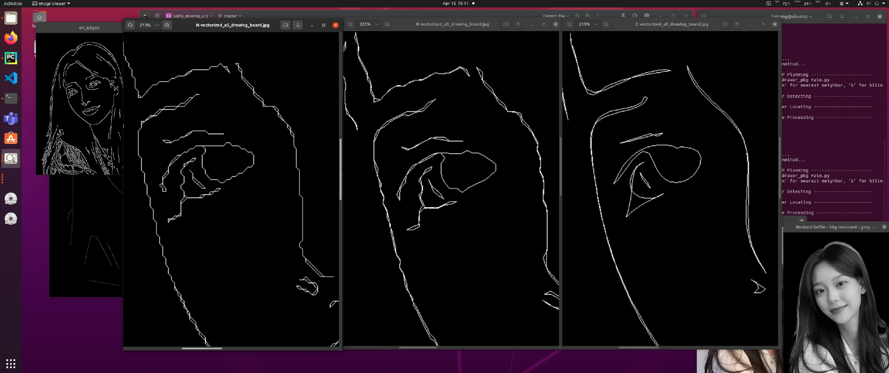
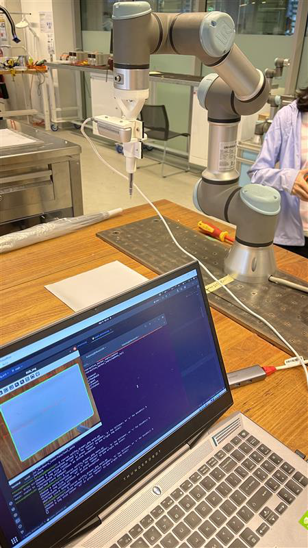
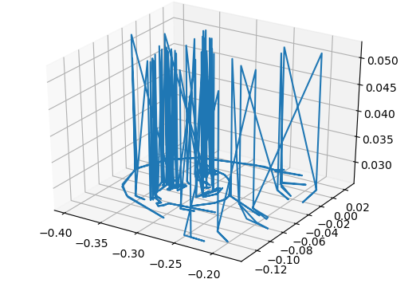
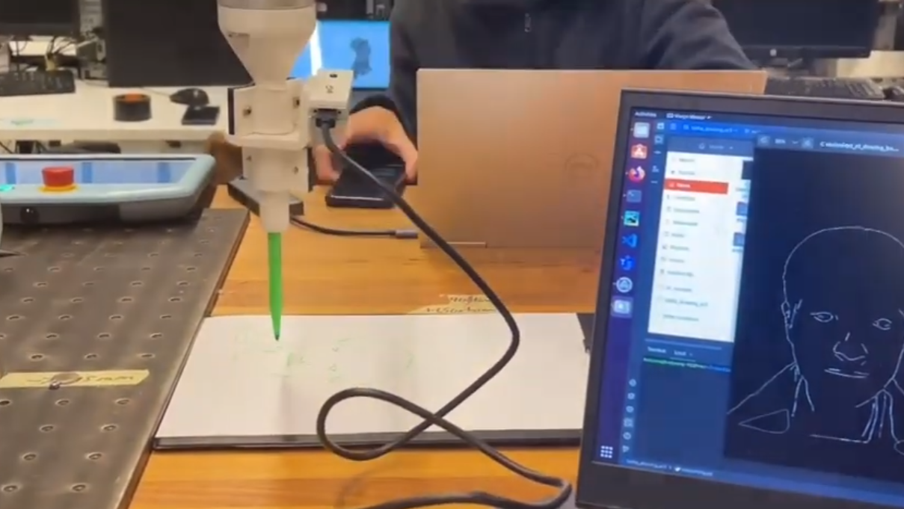

Vision-Guided UR3
Robotic Drawing System
A ROS-based pipeline that captures a live selfie, extracts facial contours through computer vision, and drives a UR3 robot arm to reproduce the portrait on paper — end-to-end, from pixels to physical strokes.

Problem
Transform a live selfie into a precise drawing path and reproduce it on physical paper using a 6-DOF robot arm.
My Role
Full-stack: image processing pipeline, coordinate transformation, MoveIt motion control, and paper detection.
Outcome
Working end-to-end system with sub-2 mm drawing error and 40% reduction in path redundancy via TSP optimisation.
System Workflow
The pipeline runs in six stages: selfie capture → background removal → edge extraction & vectorisation → TSP path optimisation → paper corner detection → UR3 trajectory execution. Each stage was independently validated before full-system integration.

Image Processing Pipeline
Built a complete vision pipeline from raw selfie to drawable vector paths. Background removal isolates the face; Canny edge detection with contour hierarchy analysis extracts stroke candidates; three interpolation methods — nearest neighbour, bilinear, and bicubic — were benchmarked, with bicubic selected for path smoothness.
- Background removal via depth thresholding + rembg
- Canny edge detection with contour hierarchy filtering
- Bicubic interpolation for vectorised stroke generation
- TSP heuristic path optimisation — 40% fewer redundant moves

Paper Detection & Coordinate Mapping
An Intel RealSense D435 RGB-D camera mounted on the UR3 end-effector detects paper corners in real time using colour segmentation and depth filtering. A calibrated homography maps local camera coordinates into the UR3 world frame, ensuring the drawing aligns and scales correctly regardless of paper placement.
- RealSense D435 depth + colour fusion for corner detection
- Homography calibration: camera frame → UR3 world frame
- Adaptive scaling to paper dimensions at runtime

Robot Motion Control
UR3 trajectory execution uses MoveIt for collision-aware path planning, with real-time IK solving and joint limit monitoring. Pen length compensation is baked into the tool centre point (TCP) calibration to maintain consistent contact pressure across the full drawing area.
- MoveIt motion planning with collision avoidance
- Real-time inverse kinematics with joint limit checks
- TCP calibration incorporating pen tip offset
- Drawing error < 2 mm across full A4 area
Key result: sub-2 mm positional accuracy maintained throughout continuous drawing sequences exceeding 300 waypoints.

Final Result
The complete system — perception, coordinate transformation, path planning, and robotic execution — was demonstrated live, producing vectorised selfie portraits on paper. The pipeline runs fully autonomously from shutter click to final pen lift.
